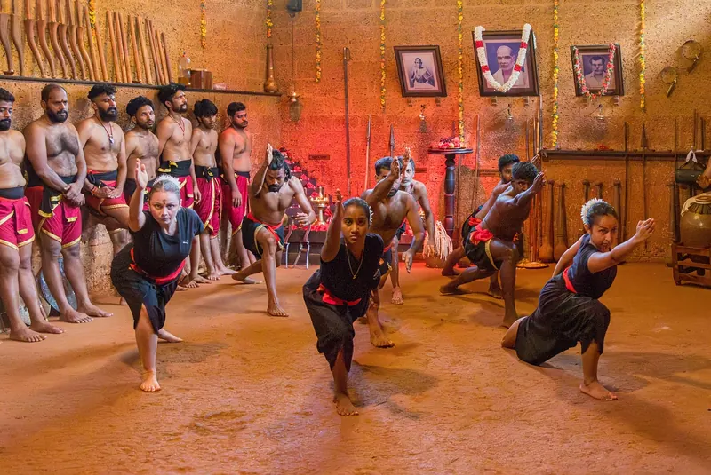
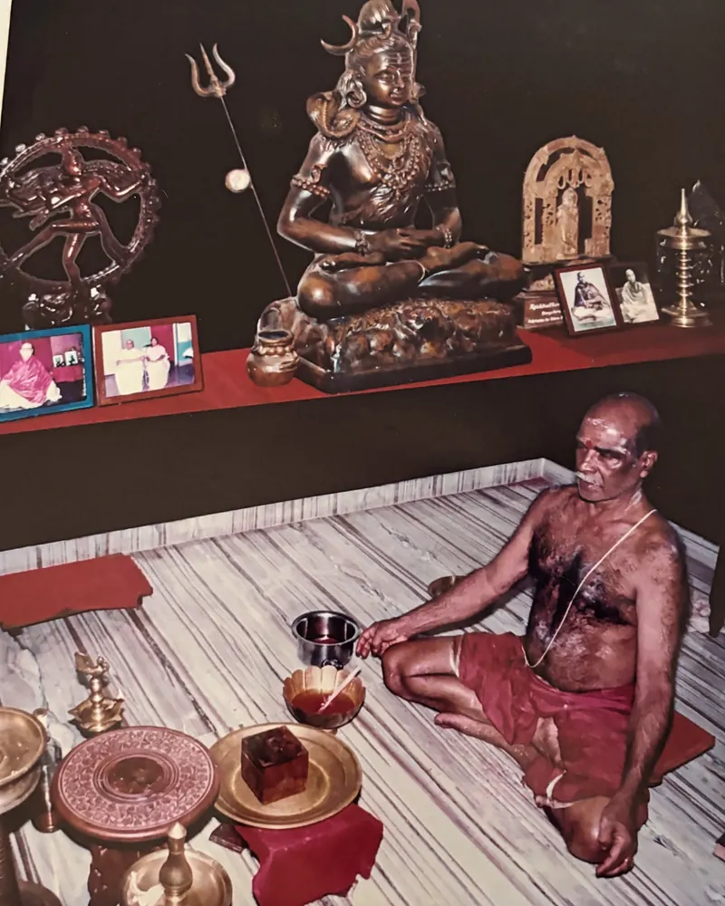
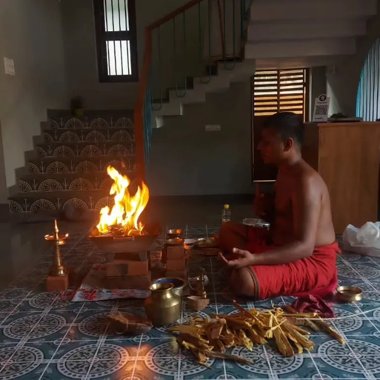
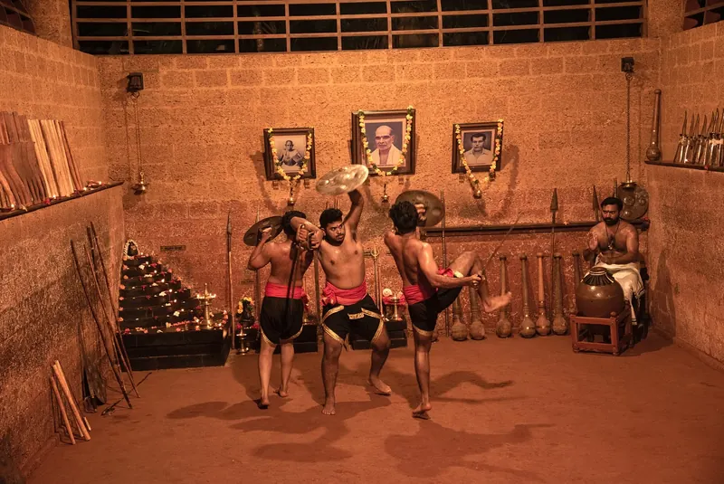
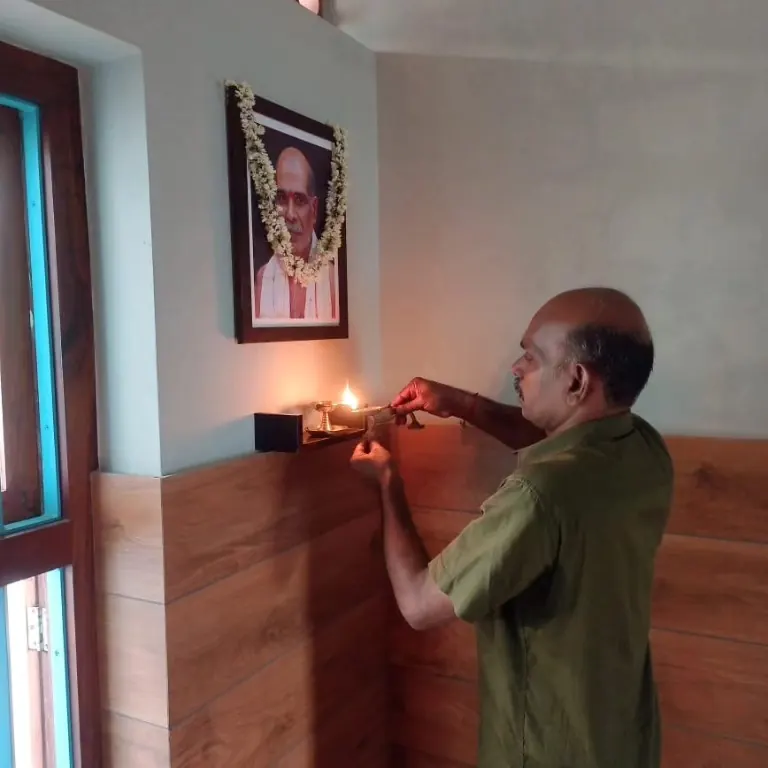

Train with us
Classes in the Kalari for children, women and adults, plus live online classes for students anywhere in the world.
Puthiyara, Kozhikode
Train in the Kalari at Puthiyara or online from anywhere, guided by Gurukkals of an unbroken Kerala lineage.
Where the warrior's way and the healer's art meet.

Hindustan Kalari Sangham was founded at Puthiyara, Kozhikode, in 1952 by Veerasree Sami Gurukkal. For more than seven decades it has been a place to train, to heal and to worship. Students learn Kalaripayattu in the earthen Kalari pit or online, patients come for Marma Chikitsa and traditional fracture care, and the whole community gathers through the year for Vidyarambham, Navratri and Gurusmriti.
Read about our lineage
Classes in the Kalari for children, women and adults, plus live online classes for students anywhere in the world.

Marma Chikitsa and Ayurvedic fracture care, supported by physiotherapy, X-ray and a pharmacy at our treatment centre.

From Veera Vaibhavam at the Kumbhamela to the BRICS Games in Ahmedabad, we carry Kalaripayattu to audiences across India.

Founded in 1952, our Kalari keeps alive the teachings, rituals and festivals passed down from Veerasree Sami Gurukkal.
The Kalari pit at Puthiyara during Gurusmriti, the annual remembrance of our founder.
Training, worship and celebration follow the calendar of the Kalari. Follow us on Instagram for dates and details.
See the full calendarNo martial-arts background needed. Message us for timings and fees.